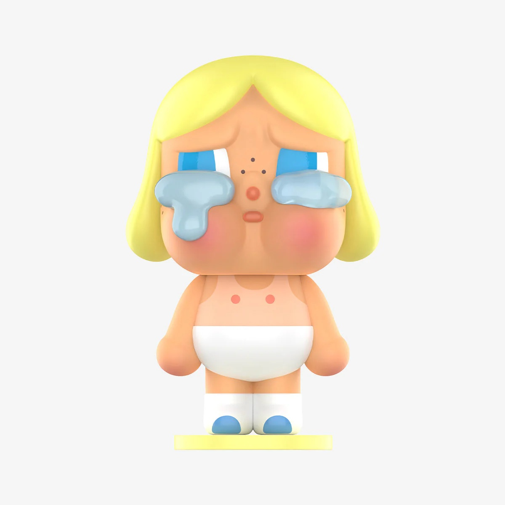
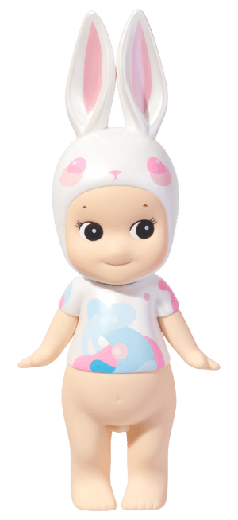
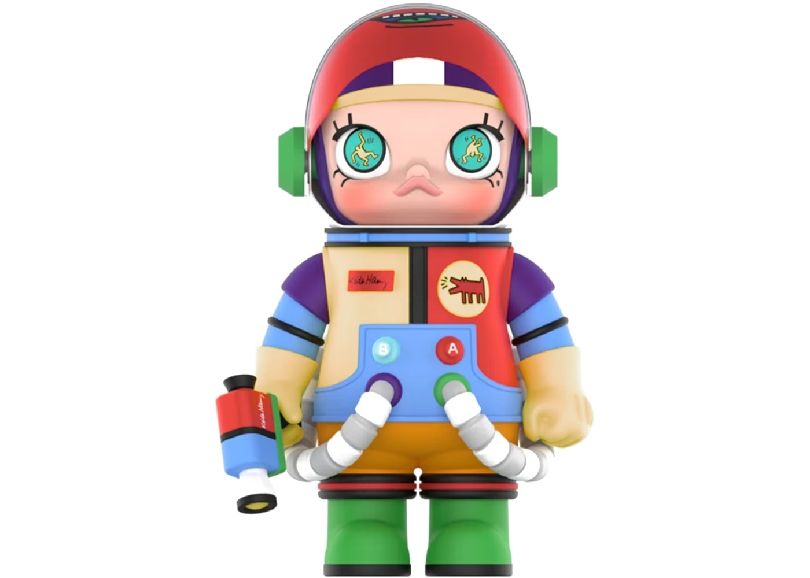

2010 – 2016
Wang Ning did not set out to build a company whose business model rested on characters deliberately stripped of story. He set out to build something like LOG-ON, the Hong Kong retail chain he encountered in 2010. LOG-ON mixed toys, cosmetics, and stationery in a format that felt unlike any retail he had seen in Beijing. He returned and opened Pop Mart, initially a general-format lifestyle store that sold, among other things, imported collectibles.
The pivot to character IP came not from philosophy but from data. In 2015, Wang Ning noticed that Sonny Angel — a small palm-sized figurine of a cherubic child with angel wings produced in dozens of themed variations and sold as a series — was generating approximately 30% of Pop Mart's total revenue from a single display in one of his Beijing stores.4 He approached the Japanese distributor about an exclusive arrangement. The response was a refusal.
The dependence on a single licensed character Pop Mart did not own nearly ended the company. Wang Ning needed an immediate replacement: visually distinctive, legally owned, requiring no deep narrative development. In 2016, he flew to Hong Kong to sign Kenny Wong, a designer whose Molly character — a wide-eyed girl with a pursed expression — had been selling in limited editions in the designer toy market.4 Molly had no backstory, no officially established personality, no official history. Wang Ning did not consider this a deficiency. He considered it a feature.
The "no story needed" philosophy was publicly codified between 2020 and 2021. Wang Ning's formulation, as recorded by Jiemian News in 2020, was that "IP doesn't need a story because everyone can project their own story onto it."5 The formulation was not dishonest. But it also rationalized, with considerable elegance, an organizational constraint: Pop Mart had no narrative production capability at all.
Somewhere in that arc, the absence of story became a philosophy.
Wang Ning had not designed a company around the principle that characters should have no stories. He had signed a character that happened to have no story and watched it succeed. Then he reasoned backward to a philosophy that explained it.
When 36Kr reported in early 2026 that Pop Mart's internal animation effort had "ended without results,"6 the finding confirmed what the organizational chart had always implied: the company was a product company, not a storytelling studio, and the distinction was organizational, not temporary.
By 2025, Pop Mart's portfolio had expanded well beyond Molly. Six character families each generated more than $275 million in annual revenue, led by SKULLPANDA and CRYBABY — a teardrop-faced figure that had become a breakout hit across Asia.4 Each character was visually distinctive but narratively empty.


The company operated more than 630 retail stores and 2,600 robotic vending machines across dozens of countries. Gross margins exceeded 72%.1 It was a high-margin consumer business whose founding philosophy had been born from a licensing crisis, rationalized after the fact, and never tested against the question it would eventually have to answer: what happens when blankness is not enough?

This is the object that nearly saved Pop Mart — and the model it replicated.
